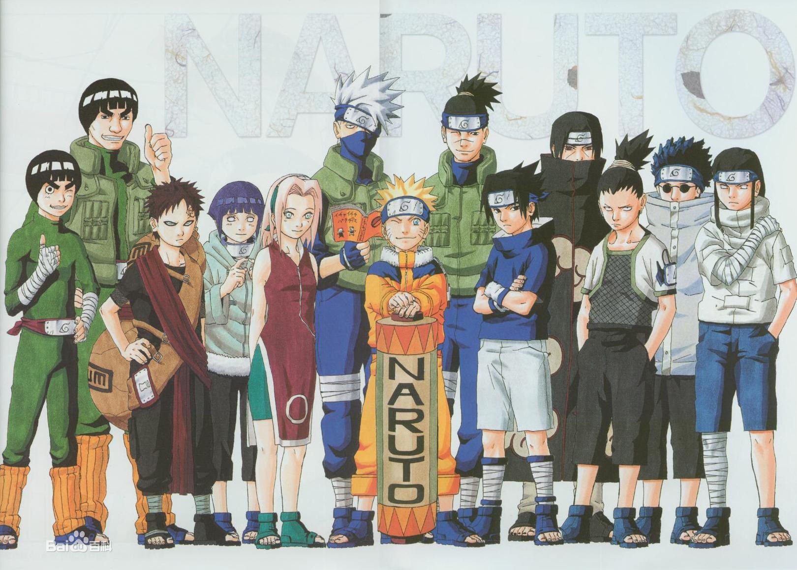
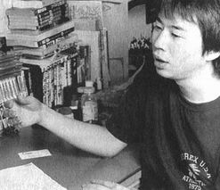

作品简介
这是一个忍者的世界。从小身上封印着邪恶的九尾妖狐，鸣人受尽了村人的冷落；只是拼命用各种恶作剧试图吸引大家的注意力。好在还是有依鲁卡老师关心他；鸣人的性格才没有变得扭曲，他总是干劲十足；超级乐观。为了让更多的人认可自己，鸣人的目标是成为火影。鸣人的同伴，是由老师确定的同班同学，随着共同的战斗，终于成了互相认可、信赖的好伙伴。 由日本集英社授权，连环画出版社正式引进出版，北京中少动漫图书有限公司发行的正式简体中文版《火影忍者》截至2013年4月已发行第63卷。 2010年5月《火影忍者》在日本国内发行量突破一亿，是继《乌龙派出所》、《龙珠》、《灌篮高手》、《海贼王》集英社创社以来第五部发行量超过一亿的漫画。
作者简介
岸本齐史是日本JUMP系著名漫画家，早年深受《七龙珠》、《北斗神拳》、《多啦A梦》影响，崇拜鸟山明、大友克洋、西尾铁也等人。从1999年在JUMP上推出长篇连载《火影忍者》，并由此一举成名。截至2012年，漫画《火影忍者》单行本销量已突破一亿册。岸本齐史的背景与大多漫画家一样，其本人就是主角鸣人的翻版。上学时成绩极不理想，大学落榜，随后考了美术学院。这并不是唐突的决定，早在岸本小学时，就受到鸟山明《七龙珠》的影响，对漫画情有独钟，并偷偷在教科书的空白处涂鸦。高中画了自己编的短篇，只敢拿给家人和同学征求意见，结果因为反响不好，最终也没拿去投稿。
在人们看来，岸本属于突然成名的典型，一部《火影忍者》使他从日本红到中国，人气榜上居高不下，游戏动画一代代出，版税稿费拿得轰轰烈烈,然而这套《火影忍者》的诞生，却不是个顺风顺水的过程。与“JUMP”多漫画家的一帆风顺相比，岸本经历了一个难产的痛苦过程。
作者思想
天才与勤奋,这是一个很老的话题了,究竟哪个离成功更近呢.菜鸟的奋斗史依旧是一个很能吸引人的内容,所以作品的主人公不是酷酷的宇智波佐助,而是总是傻傻的旋涡鸣人.
不知道是不幸还是万幸,这个无父无母的孩子生来就被人所迁怒,尽管体内的妖狐有强大的力量,但却毫不知情也不会取用它,于是他总是比别人显的要没有才能,什么都学不好,被人叫做吊车尾,但主人公就是主人公,他毫不气馁,不断做引人注目的事情,渴望为人们所重视,成为被人所景仰的忍者,他坚守着自己的忍道,努力着,奋斗着,就是这不灭的斗志打动了一个又一个人,伊鲁卡老师,卡卡西老师,甚至是三忍之一的自来也,他们帮助鸣人,帮他变的越来越强悍,并使其灵活应用自己的九尾之力,超越了一个又一个有着血继界限的天才们.
作品中的忍者们都坚守着自己的忍道,用自己忍道来规范着自己的行为,引导自己走的路,而这个忍道在我们现实生活中就是------信念.始终保持自己的信念也是作品要突出的主题之一。